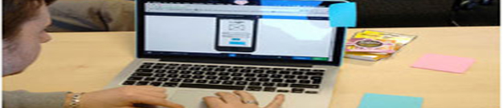

COURSES: Dr. Rajaa Al-Raddadi

Epidemiological Surveillance of Public Health Cities
take this course
Description:
This course exposed the trainee to the definition and types of surveillance system, the surveillance needs, design a surveillance program and evaluate an existingone.
Course Objectives:
After this course the attendees will be able to do the following:
1. Define surveillance system
2. Describe the most common types of surveillance system (passive, active,
syndromic, sentinel )
3. Identify common time trends (seasonal, cyclical )
4. Analyze surveillance data.
5. Interpret and communicate results.
6. Identify surveillance attributes (sensitivity, reliability)
7. Be familiar with surveillance terms (case definition, notification)
Dr. Rajaa Al-Raddadi